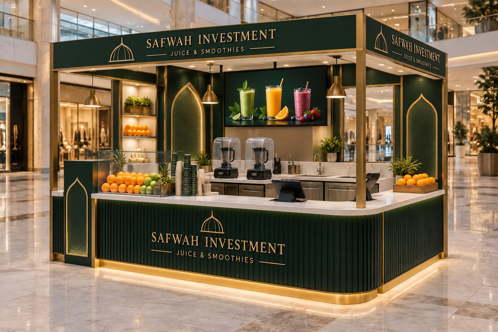

القيمة المقترحة
Fresh • Fast • Natural • Consistent. قائمة إطلاق من 8 منتجات، ضمن نطاق 8–12 منتجًا رئيسيًا مع موسميات محدودة. زمن تجهيز مستهدف لا يتجاوز 2.5 دقيقة.
العالية مول — المدينة المنورة، المملكة العربية السعودية
مساحة صغيرة. قائمة مركّزة. قرار استثماري مبني على اختبار الموقع.
استعراض الدراسة
كشك عصائر وسموذي بمساحة مستهدفة 12–16 م² داخل العالية مول. النموذج الأساسي 16 م²، يجمع الفواكه الطازجة والمجمدة IQF واللبّ المجمد في قائمة سريعة من 8 منتجات أساسية. التوصية: الانتقال للتحقق الميداني والعروض، ثم قرار استثمار مشروط؛ لا اعتماد نهائي للجدوى قبل إثبات الحركة وتكلفة التشغيل.
Fresh • Fast • Natural • Consistent. قائمة إطلاق من 8 منتجات، ضمن نطاق 8–12 منتجًا رئيسيًا مع موسميات محدودة. زمن تجهيز مستهدف لا يتجاوز 2.5 دقيقة.
المتسوقون والعائلات والموظفون الباحثون عن مشروب سريع. تقسيم شرائح مبدئي يحتاج مقابلات قصيرة واختبار استعداد للدفع داخل المول.
تورد الدراسة الأصلية مساحة إجمالية للمول 110,970 م²، ومساحة تأجيرية 76,948.71 م² ونحو 2,400 موقف، وافتتاح جرير في يناير 2026 بمساحة 2,324 م² واستثمار 21 مليون ريال. هذه معلومات سياقية من النسخة السابقة تحتاج مطابقة أحدث وثائق كنان وجرير؛ لا تمثل قياسًا للطلب أمام الكشك.
| اختبار السوق | المخرج المطلوب |
|---|---|
| المنافسون المباشرون والبدائل | خريطة نقاط البيع والمسافة والقائمة والسعر والانتظار داخل المول |
| الاستعداد للدفع | اختبار أسعار القائمة وافتراض فاتورة 24 ريال |
| تحويل الحركة إلى مبيعات | الطلبات = المارة × معدل التوقف × معدل الشراء بعد التوقف؛ جميع المعدلات تحتاج قياسًا |
| المقارنة المعيارية | 3–5 منافسين وعروض 3 موردين؛ لا توجد نتائج مقارنة ميدانية معتمدة بعد |
| الطرف | الدور والمسؤولية |
|---|---|
| المستثمر / صفوة | اعتماد رأس المال والعائد المستهدف وقرار GO / NO-GO |
| المالك القانوني والمشغّل | تحديد الكيان والسجل والنشاط والحساب البنكي والمسؤولية التعاقدية |
| إدارة المول / كنان | اعتماد الموقع والتصميم والمرافق والعقد وساعات التشغيل |
| الموردون وفريق التشغيل | التوريد البارد والضمان والصيانة والجودة وخدمة العملاء |
لم تُحدد نسب الملكية أو الشركاء أو مصدر التمويل. توثَّق الملكية المباشرة وغير المباشرة والمستفيد الحقيقي عند اختيار الكيان، مع تحليل Look-through إذا وجدت كيانات وسيطة. لا يفترض المشروع حاجة إلى SPV مستقل دون مبرر قانوني أو استثماري.
الحوكمة المقترحة: موافقة المستثمر على العقد والميزانية، صلاحيات شراء محددة، فصل التحصيل عن مراجعة التسويات، إقفال يومي لنقاط البيع والمخزون، تقرير أسبوعي لأول 90 يومًا ثم مراجعة شهرية للأداء.
تصور 4 × 4 م مفتوح من جهتين على الأقل. تعكس الهوية الأخضر والذهبي وإيقاع الأقواس وشارة قبة مجردة، مع بقاء اسم صفوة. لا تُعد هذه الهوية شعارًا رسميًا للمسجد أو دلالة على ارتباط مؤسسي به.
الأجهزة أسفل الكاونتر حيث تسمح مواصفاتها والتهوية؛ تُظهر الواجهة الفواكه والمنتج. تفصل حركة الطلب والدفع والاستلام، وتُراجع الأحمال الكهربائية والارتفاعات والصرف والتهوية وإمكانية الوصول قبل التصنيع.
مخطط وظيفي مرجعي فقط • 16 م² • لا يمثل توزيعًا هندسيًا بمقياس رسم
الميزانيات التالية من الدراسة الأصلية، إجمالي لكل بند بالعدد المعروض وليست سعر الوحدة. الصور أمثلة شكلية لنوع الجهاز، وليست موديلات مختارة أو عروض شراء سعودية. تُفحص الملاءمة التجارية والجهد الكهربائي والضمان وقطع الغيار قبل الشراء.


| الجهاز | العدد | ميزانية البند • ريال |
|---|---|---|
| خلاط تجاري بغطاء عازل للصوت | 2 | 2,500–3,500 |
| عصارة برتقال أوتوماتيكية | 1 | 4,500–5,500 |
| عصارة ضغط بارد تجارية | 1 | 800–1,500 |
| فريزر تحت الكاونتر | 1 | 5,000–6,000 |
| ثلاجة عرض / رأسية | 1 | 2,000–3,000 |
| صانعة ثلج 30–36 كجم/يوم | 1 | 2,300–3,500 |
| ماكينة تغليف أكواب | 1 | 1,600–2,700 |
| فلتر مياه ونظام أحواض | 1 | 3,500–5,000 |
| ميزان أغذية رقمي | 1 | ≈500 |
| نظام نقاط بيع | 1 | 2,500–4,000 |
| أدوات وحاويات | — | 3,000–4,000 |

تُستخدم IQF والحصص الموزونة لضبط الوصفة والسرعة والهدر والموسمية. يُفصل وصف العصير الطازج عن السموذي المصنوع بفواكه مجمدة، وتُوضح المكونات ومسببات الحساسية.
المسار: استلام وفحص حرارة وسلامة العبوة → تخزين وفق تعليمات المورد → وزن وتحضير → خلط/عصر → تغليف وتسليم → إقفال يومي للهدر. يُستخدم FIFO مع إعطاء أولوية لانتهاء الصلاحية FEFO، وسجل تتبع للدفعات وخطة انقطاع تبريد.
| الفاكهة | الشكل المقترح |
|---|---|
| الفراولة | IQF |
| المانجو | شرائح IQF + لب مجمد |
| التوت المشكل | IQF |
| الرمان | حبوب مجمدة |
| الجوافة | لب مجمد |
| الأناناس | طازج / مجمد حسب السعر |
| الموز والبرتقال والليمون والنعناع | طازج |
مطلوب 3 عروض توريد تتضمن السعر/كجم، الحد الأدنى، التسليم للمدينة، السلسلة الباردة، المنشأ، المواصفات، نسبة السكر/الإضافات، الصلاحية وسياسة الرفض. الأسعار والتوافر المحلي لا تُعد مثبتة بعرض هذه الصورة.
بطاقات وصفات بالجرام، وزن الحصة، سجلات الحرارة والتنظيف والهدر، فحص مياه وثلج صالحين للاستهلاك، وفصل التنظيف عن تداول الغذاء.
ميزانية العمالة 168,000 ريال سنويًا دون تفصيل عدد الموظفين والورديات. تُبنى خطة تغطية لساعات المول والذروة والإجازات والتدريب وتُطابق تكاليف التوظيف الفعلية.
اعتماد المياه والصرف والكهرباء والأحمال والتهوية ومساحة التخزين قبل توقيع التصنيع. توفير خلاطين وخطة توقف وصيانة للأجهزة الحيوية.
تُراجع اشتراطات محلات العصائر الصادرة 2025 والنسخة السارية لدى بلدي حسب النشاط والموقع؛ تُستكمل الرخصة البلدية، متطلبات سلامة الغذاء والشهادات الصحية للعاملين وموافقات المول والسلامة ذات الصلة. لا تعد مساحة 16 م² مقبولة تلقائيًا قبل التحقق من الحد الأدنى ومتطلبات النشاط.
المصدر: اشتراطات محلات العصائر — وزارة البلديات والإسكان
يتضمن مسار الجاهزية تأكيد وضوح المكونات والحساسية والدفع الإلكتروني وإدارة المخلفات، وتقييم التسجيل الضريبي والفوترة الإلكترونية مع المحاسب وفق أحكام الهيئة السارية.
| البند | ريال |
|---|---|
| تصنيع وتجهيز الكشك | 48,000 |
| الأجهزة الرئيسية | 30,000 |
| توصيلات المياه والكهرباء والصرف | 7,000 |
| نقاط البيع والشاشات والهوية | 8,000 |
| التراخيص والتجهيز الافتتاحي | 5,000 |
| المخزون الأول | 6,000 |
| احتياطي وتكاليف غير متوقعة | 16,000 |
| إجمالي الاستثمار المقدر | 120,000 |
الإيجار المفترض: 16 م² × 1,500 ريال للمتر سنويًا = 24,000 ريال سنويًا. يجب تثبيت أن السعر سنوي وتحديد رسوم الخدمات والضريبة والتأمين وأي نسبة مبيعات في العقد.
| البند | ريال / سنة |
|---|---|
| الإيجار | 24,000 |
| رسوم المول والخدمات — افتراض | 18,000 |
| العمالة | 168,000 |
| الكهرباء والمياه | 24,000 |
| التسويق | 18,000 |
| الصيانة | 8,000 |
| نقاط البيع والإنترنت والإدارة | 10,000 |
| التراخيص والتأمين ومصروفات أخرى | 8,000 |
| احتياطي التشغيل | 10,000 |
| التكلفة الثابتة المعتمدة في الدراسة الأصلية | ≈288,000 |
المواد والكاسات والهدر ورسوم الدفع: افتراض تكلفة متغيرة 31% من صافي الإيرادات؛ هامش المساهمة 69%. يجب اختبار كل وصفة وتوزيع نسبة التكاليف الفعلية؛ رسوم التوصيل إن أضيفت خارج هذا الافتراض.
جميع القيم سنوية بالريال. تحصيلات العملاء تفترض 365 يوم تشغيل وفاتورة 24 ريال؛ صافي الإيراد = التحصيلات ÷ 1.15. المصروفات الثابتة 288,000 ريال. القيم أدناه هي أرقام النسخة الأصلية المقربة.
يفصل النموذج الضريبة لأن الإيرادات المتوقعة تتجاوز حد التسجيل الإلزامي 375,000 ريال للتوريدات الخاضعة خلال 12 شهرًا؛ يراجع المحاسب موعد التسجيل وحالة الكيان. ZATCA
| المؤشر | متحفظ | أساسي | متفائل |
|---|---|---|---|
| الطلبات يوميًا | 55 | 80 | 110 |
| تحصيلات العملاء شاملة الضريبة | 481,800 | 700,800 | 963,600 |
| صافي الإيرادات دون الضريبة | 419,000 | 609,000 | 838,000 |
| هامش المساهمة بعد تكلفة متغيرة 31% | 289,000 | 420,000 | 578,000 |
| المصروفات الثابتة | 288,000 | 288,000 | 288,000 |
| الربح قبل الفوائد والضرائب والإهلاك EBITDA | ≈1,000 | ≈132,000 | ≈290,000 |
| السنة | صافي الإيراد • ريال | EBITDA • ريال |
|---|---|---|
| 1 | 609,000 | 132,000 |
| 2 | 670,000 | 160,000 |
| 3 | 724,000 | 182,000 |
افتراضات السنوات التالية: نمو الإيراد 10% في السنة الثانية ثم 8% في الثالثة، وزيادة التكاليف الثابتة 5% سنويًا، وثبات التكلفة المتغيرة قرب 31%. لا يمثل هذا توقعًا مثبتًا ولا يشمل التمويل والإهلاك والزكاة/الضرائب.
التعادل الأصلي التقريبي؛ الحساب الكامل 54.8 طلب/يوم.
تحصيلات شاملة الضريبة؛ 55 طلبًا يوميًا تعني 40,150 ريال شهريًا على أساس 365÷12 يومًا.
بوابة التنفيذ الأصلية بهامش أمان؛ EBITDA حسابي نحو 27,360 ريال عند 60 طلبًا.
التعادل = 288,000 ÷ [365 × (24 ÷ 1.15) × 69%]. الجدول التالي حساب مشتق للحساسية يغير افتراضًا واحدًا، منفصل عن الأرقام الأصلية المحفوظة.
| الحالة | EBITDA حسابي سنوي • ريال |
|---|---|
| أساسي: 80 طلبًا، فاتورة 24 ريال | 132,480 |
| 60 طلبًا يوميًا | 27,360 |
| انخفاض الفاتورة 10% إلى 21.6 ريال | 90,432 |
| تكلفة متغيرة 35% بدل 31% | 108,104 |
| زيادة الثابت 10% إلى 316,800 ريال | 103,680 |
| البديل | المقارنة وبوابة الاختيار |
|---|---|
| كشك 16 م² — الأساس | توازن التحضير والتخزين؛ يشترط اعتماد المول والمرافق والطلب |
| كشك 12 م² | إيجار حسابي 18,000 ريال عند السعر نفسه؛ ليس له نموذج مالي مكتمل وتُعاد دراسة الأجهزة والامتثال |
| اختبار مؤقت معتمد | قياس التحويل والقائمة قبل الالتزام؛ الموافقات والتكلفة والمدة تحتاج تحديدًا |
| تأجيل / موقع بديل | حفظ رأس المال إذا فشل الطلب أو تجاوزت العروض القدرة التمويلية |
تُستكمل مقارنة 3–5 منافسين داخل المول: الأسعار وحجم الكوب وجودة المنتج وزمن الانتظار والتموضع. وتقارن 3 عروض تصنيع و3 عروض توريد على أساس مواصفات متكافئة. لا توجد نتائج مقارنة ميدانية معتمدة بعد.
الموقع المحدد أكبر مخاطرة تجارية. الأولويات التالية تقييم نوعي للعرض وليست احتمالات أو خسائر مقاسة.
| المخاطرة | الأولوية | الإجراء والمسؤول |
|---|---|---|
| ضعف الحركة أمام الكشك | مرتفع | عد وتحويل قبل العقد؛ قائد الدراسة |
| رسوم خفية أو نسبة مبيعات | مرتفع | مراجعة العقد وإعادة النموذج؛ المستثمر والمحاسب |
| هدر الفواكه وارتفاع الأسعار | متوسط | IQF وحصص موزونة ومورد بديل؛ التشغيل |
| ازدحام وتأخر الخدمة | متوسط | قائمة محدودة وتوزيع محطات وقياس وقت؛ المشغّل |
| تعطل خلاط أو تبريد | مرتفع | خلاطان وصيانة وحرارة وخطة رفض مخزون؛ التشغيل |
| نقص العمالة | متوسط | تدريب متعدد المهام وتغطية ورديات؛ المشغّل |
| منافس قريب وموسمية | مرتفع | خريطة منافسين ومزيج fresh/سموذي؛ قائد الدراسة |
| جودة غير ثابتة أو سلامة الغذاء | مرتفع | وصفات وتنظيف وتتبّع ومسببات حساسية؛ المشغّل |
| رفض المساحة أو التصميم | مرتفع | موافقة مكتوبة قبل التصنيع؛ إدارة المشروع |
متوسط الفاتورة شامل الضريبة
هدف الطلبات الأساسي
التعادل التقريبي
التكلفة المتغيرة / صافي الإيراد
الهدر المستهدف
زمن التجهيز
تُتابع كذلك نسبة العمالة، هامش المساهمة، المبيعات لكل م² ولكل ساعة، تكرار الشراء والشكاوى وتوقف الأجهزة. يُعرّف الهدر قبل الافتتاح بقيمة المواد المهدرة ÷ قيمة المواد المستخدمة، دون خلطه بنسبة التكلفة المتغيرة.
سجل يومي من نقاط البيع والمخزون والحرارة، مراجعة أسبوعية لأول 90 يومًا ثم إقفال شهري ومقارنة الفعلي بالأساسي والمتحفظ. لا توسع حتى تثبت جودة التشغيل والتحصيل والربحية.
مخطط ومساحة ومرافق واعتماد مبدئي مكتوب من المول.
عد موثق وتحويل واقعي، مع مراجعة أيام العمل والموسمية.
الإيجار والضريبة والخدمات والوديعة والساعات ونسبة المبيعات والمياه والصرف والكهرباء.
3 عروض للفواكه الطازجة والمجمدة وإثبات سلسلة باردة للمدينة.
3 عروض تصنيع واعتماد تصميم ومساحة ومطابقة CAPEX والتراخيص.
8 وصفات وتكلفة كوب وحجم ومزيج مبيعات وفاتورة وهدر.
لا تنفيذ حتى يثبت الموقع قدرة واقعية على 60+ معاملة يوميًا، مع اعتماد التمويل والسيولة والعروض والمخاطر.
تبدأ الخطة بعد تكليف الفريق؛ تُعاد جدولة التنفيذ إذا تأخرت الموافقات أو التراخيص أو التوريد. لا يبدأ التصنيع الملزم قبل اجتياز بوابات ما قبل الاستثمار.
قائد الدراسة: الموقع والعقد والحركة؛ المخرج: أدلة وقرار استمرار مشروط.
إدارة المشروع: الهوية والكشك والعروض والوصفات؛ المخرج: تصميم وميزانية معتمدان.
إدارة المشروع: التصنيع والترخيص والشراء والتوظيف؛ المخرج: تعاقدات ومواعيد تسليم.
المشغّل: تركيب وفحص وتدريب ووصفات؛ المخرج: قائمة جاهزية وسجلات تجريبية.
المشغّل والمستثمر: افتتاح تجريبي وتحسين وإطلاق؛ المخرج: مؤشرات وقرار تثبيت التشغيل.
المشروع مجدٍ مبدئيًا في النموذج الحالي عند 80 طلبًا يوميًا بمتوسط 24 ريال شامل الضريبة، بصافي إيراد أصلي نحو 609 آلاف ريال وEBITDA نحو 132 ألف ريال واستثمار 120 ألف ريال. العامل الحاسم قدرة الموقع، لا انخفاض الإيجار وحده.
يؤجل الالتزام إذا فشل الطلب أو الامتثال أو تجاوزت العروض القدرة التمويلية. ملف القرار النهائي: العقد والعروض والتدفق النقدي الشهري والمطابقة الحسابية وخريطة المسؤوليات.
| التصنيف | المتاح / المطلوب |
|---|---|
| معلومة صاحب المشروع | المول والمدينة وسقف 16 م² وسعر 1,500 ريال/م²؛ السنوية افتراض يحتاج عقدًا |
| افتراضات النموذج | 365 يومًا، 24 ريال شامل 15%، 31% متغير، 288,000 ثابت، 120,000 استثمار |
| الطلب | حركة وتحويل وموسمية ومنافسة وأسعار واستعداد للدفع |
| التكاليف والسيولة | عروض أجهزة وتصنيع وتوريد ورسوم وورديات ورواتب شاملة ورأس مال عامل ووديعة |
| القانون والحوكمة | الكيان والشركاء والملكية وUBO والتمويل والموافقات |
| الوحدة الاقتصادية | حجم الكوب ووصفات بالجرام وعائد الفاكهة ومزيج المبيعات |
| المطابقة المالية | 286,000 مقابل 288,000، ازدواج البنود، ضريبة المدخلات والسيولة والموسمية |
أصل الأرقام: المحادثة المرتبطة «دراسة جدوى كشك عصيرات»، النسخة 1.0. هذا إصدار عرض ثنائي اللغة مكتمل المحتوى، وليس اعتماد جدوى نهائيًا. لم تُختلق نتائج ميدانية أو عروض أو نسب ملكية. المتطلبات التنظيمية تُراجع قبل التنفيذ مع الجهات المختصة.
المنهج وفق تعليمات المشروع: تعريف القرار والفجوات والبدائل والمخاطر والبوابات والتنفيذ دون نسخ نتائج دراسات سابقة. لا توجد مراجع مرفوعة في هذه النسخة المحلية غير تعليمات المشروع. تعذر فتح صفحات المرجع المنهجي عبر أداة البحث؛ لا ننسب إليها بيانات مالية جديدة.
تصور الكشك مولّد بالأداة المدمجة: كشك 4×4 م بألوان صفوة وشارة قبة مجردة وأقواس مستلهمة من المدينة دون أسعار. تُحفظ تعليمات التوليد في ملف المشروع؛ لا يمثل موقعًا قائمًا أو مقاسات تنفيذية.